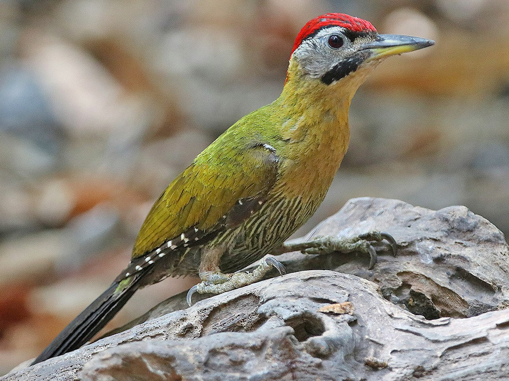

Picus vittatus
The male Laced Woodpecker has olive-green upperparts and a red crown to nape, black submoustachial stripe, with fine whitish streaks, grey ear coverts and slightly scaled belly. The female looks similar but has black crown to nape. The Juvenile is duller with a more scaled appearance on it's belly.